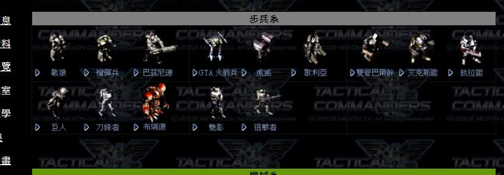
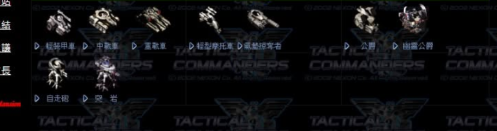
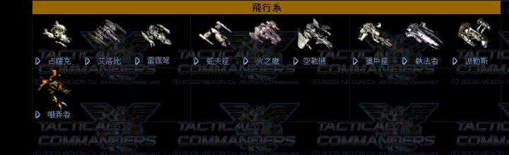
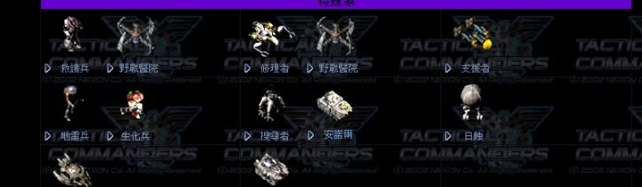

繁體中文整理版（資料來源：Ever☆Zone Tistory）

| 單位 | 基礎HP | 裝甲 | 速度 | 空間 | 重量 | 升級來源 | 特殊能力 |
|---|---|---|---|---|---|---|---|
| Humanoid（戰猿） | 1400 | 0 | 2.4 m/s | 70 | 70 | - | 隱形、安瓿、懸浮、偽裝、電擊等 |
| Bazonoid（巴茲尼德） | 2000 | 10 | 2.6 m/s | 80 | 90 | Humanoid 47 | 隱形、安瓿、懸浮 |
| Railgunner（榴彈兵） | 1800 | 1 | 3.0 m/s | 80 | 80 | Humanoid 47 | 隱形、手榴彈、EMP手榴彈等 |
| GTA Rocket Launcher | 1300 | 5 | 1.6 m/s | 90 | 90 | - | 隱形、掃蕩觀測器、ICBM等 |
| Shark（虎鯊） | 1650 | 8 | 2.2 m/s | 90 | 100 | GTA 50 | 隱形、地毯浮游、PATRIOT |
| Goliath（哥利亞） | 1600 | 8 | 3.3 m/s | 100 | 100 | GTA 50 | 隱形、奴役、星柱 |
| Twin Vulcan（雙管巴爾幹） | 1600 | 0 | 4.0 m/s | 80 | 80 | - | 隱形、EMP槍、EMP波、EMP鉛槍 |
| Exonoid（艾克斯諾） | 2000 | 5 | 3.2 m/s | 90 | 100 | Twin Vulcan 40 | 隱形、安瓿、懸浮 |
| Tilanoid（鈦拉諾） | 2000 | 10 | 1.4 m/s | 90 | 110 | Twin Vulcan 40 | 機械強化、巨大傳送、量子時鐘等 |
| Giant（巨人） | 2000 | 12 | 3.6 m/s | 150 | 150 | - | 重型隱形、地震、火焰地震等 |
| Blader（刀鋒者） | 1600 | 8 | 7.5 m/s | 90 | 90 | Giant 45 | 隱形、安瓿、懸浮 |
| Phantom（魅影） | 1050 | 0 | 4.8 m/s | 70 | 70 | - | 隱形、星殼、月亮殼等 |
| Sniper（狙擊手） | 600 | 0 | 3.0 m/s | 75 | 75 | Phantom 45 | 時鐘-EF、狙擊模式 |

| 單位 | 基礎HP | 裝甲 | 速度 | 空間 | 重量 | 升級來源 | 特殊能力 |
|---|---|---|---|---|---|---|---|
| Light Cannon Tank（輕炮車） | 1950 | 10 | 3.0 m/s | 160 | 200 | - | 隱形、手榴彈、資源貨櫃 |
| Medium Tank（中戰車） | 2400 | 20 | 1.6 m/s | 240 | 300 | Light Cannon 30 | 能源轉移、終極屏障、資源貨櫃 |
| Heavy Tank（重戰車） | 2900 | 30 | 1.4 m/s | 260 | 320 | Light Cannon 30 | 重型能源轉移 |
| Light Bike（輕型摩托） | 1200 | 8 | 8.0 m/s | 160 | 160 | - | 能源轉移、加速器、資源貨櫃 |
| Hover Raid（戰艦控甲者） | 1200 | 0 | 6.8 m/s | 160 | 160 | Light Bike 45 | 能源轉移、時鐘拳 |
| Artillery（自走砲） | 1300 | 1 | 1.0 m/s | 160 | 180 | - | 野砲模式 |
| Thor（突岩） | 1300 | 1 | 1.0 m/s | 160 | 160 | Artillery 45 | 野砲模式 |
| Duke（公爵） | 1600 | 5 | 2.8 m/s | 160 | 180 | - | 能源轉移、資源貨櫃、觀測器 |
| Spooky Duke（幽靈公爵） | 1500 | 3 | 6.9 m/s | 160 | 180 | Duke 45 | 能源轉移、資源貨櫃、觀測器 |

| 單位 | 基礎HP | 裝甲 | 速度 | 空間 | 重量 | 升級來源 | 特殊能力 |
|---|---|---|---|---|---|---|---|
| Zanak（占薩克） | 1000 | 1 | 5.4 m/s | 90 | 100 | - | 推進器、地毯轟炸類 |
| Exorion（艾洛比） | 950 | 0 | 11.0 m/s | 90 | 100 | - | 中子推進器、五重推進器 |
| Elombre（雷霆弩） | 1000 | 1 | 4.5 m/s | 90 | 100 | Zanak 45 | 推進器 |
| Aerofighter（空戰機） | 1300 | 2 | 5.4 m/s | 90 | 100 | Exorion 35 | 推進器、雙重觀測器 |
| Fire Eagle（火之鷹） | 1000 | 0 | - | - | - | - | 空中集火優勢 |
| Orion（獵戶座） | - | - | - | - | - | - | 隱身、對空對地飛彈 |

包含救護兵、野戰醫院、修理者、野戰醫院、支援者、地雷兵、生化兵、搜尋者、安瓿、日蝕、空中判官、碉堡車等。詳細特殊能力請參考原站。